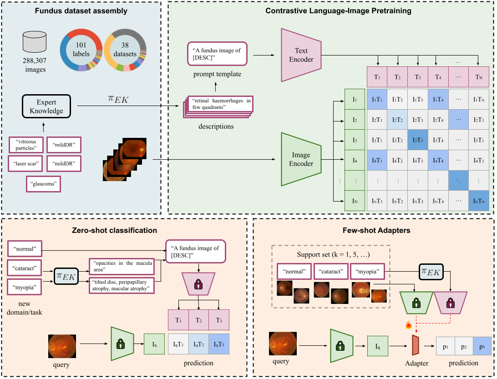
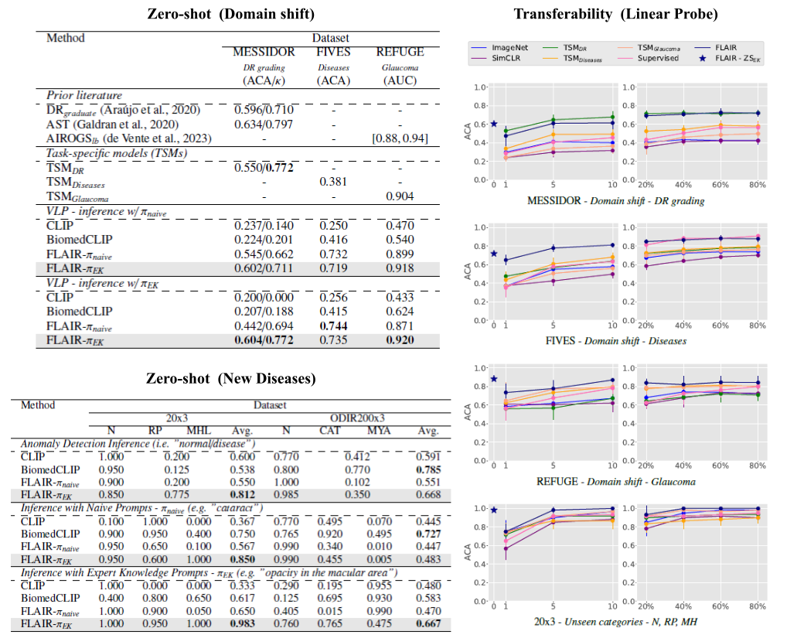

A Foundation LAnguage-Image model of the Retina (FLAIR)
Encoding expert knowledge in text supervision
Medical Image Analysis

Highlights
- FLAIR is a large-scale vision-language foundation model for fundus image analysis.
- The model is pre-trained from a collection of 38 open-access datasets, including 101 different ocular conditions.
- Encoding expert knowledge in text descriptions (e.g. "mild diabetic retinopathy" is defined by the presence
of "few microaneurysms") boosts the performance of text-driven pre-training and inference, and allows
exploiting categorically-labelled datasets.
- FLAIR shows excellent properties for zero-shot generalization to unseen categories, and efficient
transferability trough Linear Probing in the low-data (i.e. few-shot) regime.
Abstract
Foundation vision-language models are currently transforming computer vision,
and are on the rise in medical imaging fueled by their very promising generalization
capabilities. However, the initial attempts to transfer this new paradigm to medical
imaging have shown less impressive performances than those observed in other domains,
due to the significant domain shift and the complex, expert domain knowledge inherent to
medical-imaging tasks. Motivated by the need for domain-expert foundation models,
we present FLAIR, a pre-trained vision-language model for universal retinal fundus
image understanding. To this end, we compiled 38 open-access, mostly categorical
fundus imaging datasets from various sources, with up to 101 different target conditions
and 288,307 images. We integrate the expert's domain knowledge in the form of descriptive
textual prompts, during both pre-training and zero-shot inference, enhancing the less-informative
categorical supervision of the data. Such a textual expert's knowledge, which we compiled from
the relevant clinical literature and community standards, describes the fine-grained features of
the pathologies as well as the hierarchies and dependencies between them. We report comprehensive
evaluations, which illustrate the benefit of integrating expert knowledge and the strong generalization
capabilities of FLAIR under difficult scenarios with domain shifts or unseen categories. When adapted
with a lightweight linear probe, FLAIR outperforms fully-trained, dataset-focused models, more so in the
few-shot regimes. Interestingly, FLAIR outperforms by a wide margin larger-scale generalist
image-language models and retina domain-specific self-supervised networks, which emphasizes the potential
of embedding experts' domain knowledge and the limitations of generalist models in medical imaging.

Citation
Please cite our paper if it is helpful to your work:
@article{FLAIR,
title = {A Foundation Language-Image Model of the Retina (FLAIR): encoding expert knowledge in text supervision},
author = {Julio Silva-Rodríguez and Hadi Chakor and Riadh Kobbi and Jose Dolz and Ismail {Ben Ayed}},
journal = {Medical Image Analysis},
volume = {99},
pages = {103357},
year = {2025},
issn = {1361-8415},
}
Please feel free to contact us: julio-jose.silva-rodriguez@etsmtl.ca.